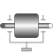

Rotor1D1D inertia attachable on 3-dim. bodies (3D dynamic effects are taken into account if world.driveTrainMechanics3D=true) |

|
Diagram
{kind=link}
Information
This information is part of the Modelica Standard Library maintained by the Modelica Association.
This component is used to model the gyroscopic torques exerted by a 1-dim.
inertia (so called rotor) on its 3-dim. carrier body. Gyroscopic torques
appear, if the vector of the carrier body's angular velocity is not parallel
to the vector of the rotor's axis. The axis of rotation of the rotor is defined by
the parameter n, which has to be given in the local coordinate system
of frame_a. The default animation of this component is
shown in the figure below.

This component is a replacement for Modelica.Mechanics.Rotational.Components.Inertia for the case, that a 1-dim.-rotational mechanical system should be attached with a 3-dim. carrier body.
The Boolean parameter exact was introduced due to performance
reasons. If exact is set to false, the influence of the carrier body
motion on the angular velocity of the rotor is neglected. This influence is usually
negligible if the 1-dim.-rotational mechanical system accelerates much faster as the base body (this is,
e.g., the case in vehicle powertrains). The essential advantage is
that an algebraic loop is removed since then there is only an
action on acceleration level from the powertrain to the base body
but not vice versa.
Reference
Schweiger, Christian ;
Otter, Martin:
Modelling
3D Mechanical Effects of 1-dim. Powertrains. In: Proceedings of the 3rd International
Modelica Conference. Linköping : The Modelica Association and Linköping University,
November 3-4, 2003, pp. 149-158
Parameters (8)
| animation |
Value: true Type: Boolean Description: = true, if animation shall be enabled (show rotor as cylinder) |
|---|---|
| J |
Value: Type: Inertia (kg·m²) Description: Moment of inertia of rotor around its axis of rotation |
| n |
Value: {1, 0, 0} Type: Axis Description: Axis of rotation resolved in frame_a |
| r_center |
Value: zeros(3) Type: Position[3] (m) Description: Position vector from origin of frame_a to center of cylinder |
| cylinderLength |
Value: 2 * world.defaultJointLength Type: Distance (m) Description: Length of cylinder representing the rotor |
| cylinderDiameter |
Value: 2 * world.defaultJointWidth Type: Distance (m) Description: Diameter of cylinder representing the rotor |
| stateSelect |
Value: StateSelect.default Type: StateSelect Description: Priority to use rotor angle (phi) and rotor speed (w) as states |
| exact |
Value: true Type: Boolean Description: = true, if exact calculations; false if influence of bearing on rotor acceleration is neglected to avoid an algebraic loop |
Inputs (2)
| cylinderColor |
Default Value: Modelica.Mechanics.MultiBody.Types.Defaults.RodColor Type: Color Description: Color of cylinder representing the rotor |
|---|---|
| specularCoefficient |
Default Value: world.defaultSpecularCoefficient Type: SpecularCoefficient Description: Reflection of ambient light (= 0: light is completely absorbed) |
Connectors (3)
| flange_a |
Type: Flange_a Description: (left) driving flange (flange axis directed INTO cut plane) |
|
|---|---|---|
| flange_b |
Type: Flange_b Description: (right) driven flange (flange axis directed OUT OF cut plane) |
|
| frame_a |
Type: Frame_a Description: Frame in which rotor housing is fixed (connector is removed, if world.driveTrainMechanics3D=false) |
Components (4)
| world |
Type: World |
|
|---|---|---|
| cylinder |
Type: Shape |
|
| inertia |
Type: Inertia |
|
| rotorWith3DEffects |
Type: RotorWith3DEffects |
Used in Examples (4)
|
Modelica.Mechanics.MultiBody.Examples.Rotational3DEffects
Demonstrates that a cylindrical body can be replaced by Rotor1D model |
|
|
Modelica.Mechanics.MultiBody.Examples.Rotational3DEffects
Demonstrates usage of models Rotor1D and Mounting1D |
|
|
Modelica.Mechanics.MultiBody.Examples.Rotational3DEffects
Demonstrates usage of model Rotor1D mounted on a moving body |
|
|
Modelica.Mechanics.MultiBody.Examples.Rotational3DEffects
Demonstrates the usage of a BevelGear1D model and how to calculate the power of such an element |